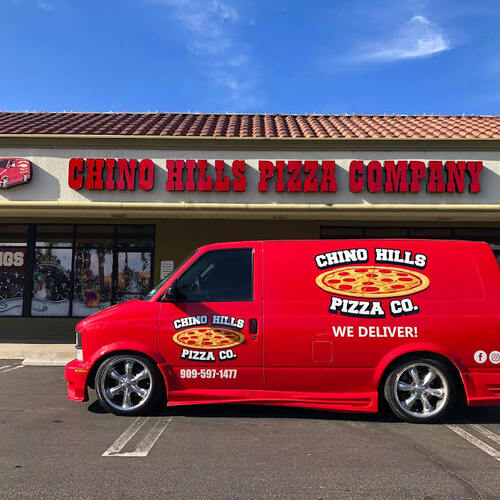
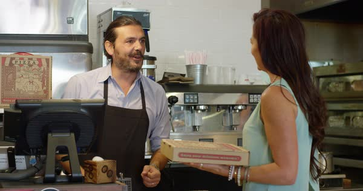
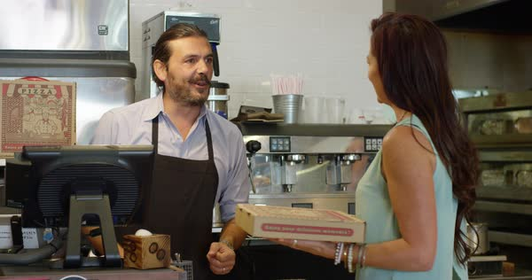

Dominic Martinez
I am currently a 4th Year Student Athlete at UC Riverside. I, however, grew up in a city about 20 minutes outside of Los Angeles called Pico Rivera. This city is one that has a dominant Latino population. Being that my living situation was not the best growing up, I have found that nothing in life comes easy and one must work to earn their keep. My family for the most part was always lower middle class, mostly because it consisted of immigrants who came from Mexico in search of a better life than what they had left behind. As is the case with most parents, the generations before mine always longed for the next to do better than they did. This has been the case in my family with myself not just attending college, but graduating as well. For clarification, the Mexican population in general graduates college at a low rate so I hold myself being Latino as an honor to represent a people.
Since beginning college during the pandemic in 2020 I have paid my way through college and cared for most of my expenses all while being a baseball student athlete. While it has surely been a challenge balancing school, sports, work, and social life, I have acquired qualities such as organization and time management in order to be successful. With this being said, throughout my years in college, I have been blessed to be named as a multi Honor Roll, Dean’s List, and Chancellor’s List Recipient. I mention this not to boast myself up, but instead to give those who have helped me grow to the man I am today their deserved flowers.
Being that I will graduate in the Spring of 2024, I will enter the workforce in the school sector. It has been my decision to become a school counselor where I look to actively progress to principal and onward to the district in order to continuously make positive impacts on my community. In this line of work I will actively work with students, teachers, school and district officials. In my personal experience, counselors can have major impacts on the students they work with. So, it is my goal to bring positivity to those I come in contact with and I am eager to bring that to whatever school I end up at.
Experience
Lead Cook
• Prep various foods for same or later dates
• Ensure quality of each entree
• Ensure staff is working quick and efficiently
Warehouse Worker
• Responsible for unloading trucks at a quick pace
• Neatly stack palets full of boxes
Lead Cashier
• Ensure all workers are doing what needs to be done
• Take orders and ring up customers
• Deal with end of the night responsibilities: Restaurant clean up, cash out registers, etc
Education
Fullerton College
Lake Tahoe Community College
University of California Riverside
Portfolio



